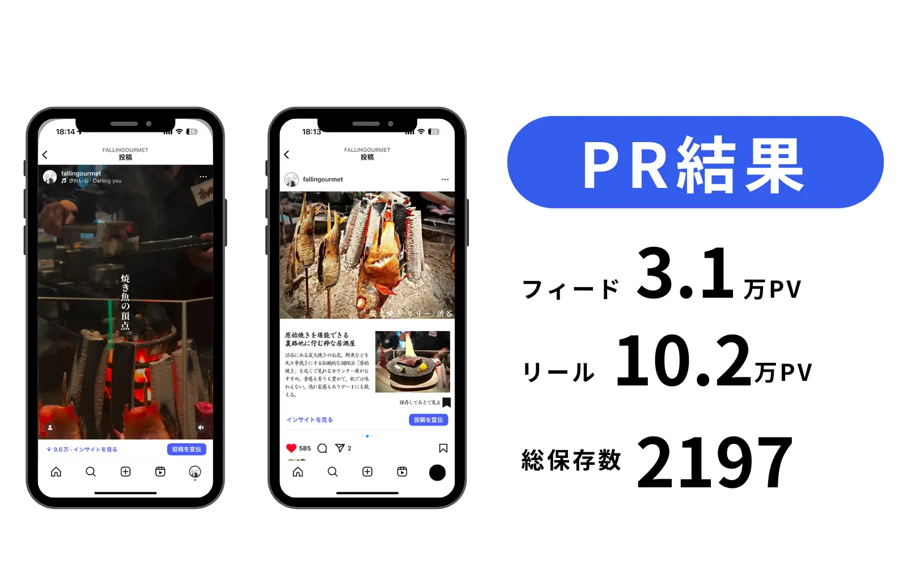

この記事でわかること
- 投稿が止まる原因は、ネタ切れではなく素材切れであること
- 素材の調達手段4つ（内製撮影・外注撮影・ストック素材・お客様の投稿）の使い分け
- スマホ内製を成立させる撮影ルールと、素材の保管・命名の型
- 撮影を外注するときに決める3項目（カット数・納品形式・利用範囲）
- 写真・動画の権利まわりで、実務上つまずきやすい点
- 1か月分をまとめて確保する素材制作フロー
投稿が止まるのは、ネタ切れではなく素材切れ
SNS運用が続かない会社に「なぜ止まったか」を聞くと、多くは「ネタがなくなった」と答えます。ただ、実際に運用ログを見ていくと、詰まっているのはネタではありません。投稿の企画は決まっているのに、そこに載せる写真や動画がない状態で止まっています。
この違いは重要です。ネタ切れなら、投稿の型を用意すれば解消できます。素材切れは、型をいくら増やしても解消しません。次のような形で運用が止まります。
- 撮影が投稿直前になっている：天候・繁忙・担当者の不在で、その週の投稿がまるごと飛ぶ
- 撮った素材が探せない：担当者のスマホのカメラロールに散らばっていて、過去の素材を使い回せない
- 使える素材の判断ができない：人物が写っている、他社製品が写り込んでいるなどの理由で、投稿直前に差し替えが発生する
素材は「投稿ごとに用意するもの」ではなく「在庫として持つもの」です。投稿頻度の1か月分を常に手元に置いておくと、止まる原因のほとんどが消えます。週3投稿なら12〜15本が目安です。
投稿の企画そのものの回し方はSNS投稿のネタ切れを防ぐコンテンツ設計｜投稿の型・ネタ源・年間カレンダーの作り方にまとめています。本記事は、その企画に載せる素材をどう調達するかの話です。
素材の調達手段は4つ
どれか1つに寄せる必要はありません。用途ごとに使い分けるのが実務です。
| 手段 | 向いている用途 | コストの性質 | 注意点 |
|---|---|---|---|
| 内製撮影（スマホ） | 日常の様子、商品の使用シーン、スタッフの登場 | 担当者の工数のみ。撮影日をまとめれば負担は小さい | 光と構図がばらつくと、アカウント全体が雑に見える |
| 外注撮影（カメラマン） | 商品の質感、広告に転用する素材、採用向けの写真 | 1回あたりの費用が発生。まとめ撮りで単価は下がる | 利用範囲を決めておかないと、広告に使えないことがある |
| ストック素材 | 背景、図解、抽象的なイメージ、季節の演出 | 月額または1点購入 | 実物を紹介する投稿に使うと信頼を損なう |
| お客様の投稿（UGC） | 利用シーン、口コミ的な訴求 | 費用は基本的に不要 | 投稿者の許諾が必要。無断転載は避ける |
実物を紹介する投稿に、ストック素材を混ぜないでください。店舗や商品を紹介する投稿でイメージ写真を使うと、来店・購入時の落差がそのまま不信につながります。ストック素材の役割は、実物を写す必要がない部分を埋めることです。
スマホ内製を成立させる3つのルール
SNSはほぼ全員がスマホで見ます。機材の差より、アカウント全体で見え方が揃っているかのほうが効きます。内製で回すなら、次の3つを先に決めてください。
撮影場所と時間帯を固定する
光の色と強さが揃うだけで、加工なしでも統一感が出ます。窓際の同じ位置、同じ時間帯を「撮影スポット」として決めてしまうのが最も簡単です。照明を買うより先に、撮る場所を決めてください。
- 店舗なら開店前、オフィスなら午前中など、人が写り込まない時間を選ぶ
- 背景に映るものを片付ける手順まで決めておくと、撮り直しが減る
縦型を基準に、寄りと引きの2カットずつ撮る
フィード・リール・ストーリーズで必要な比率が違うため、後から切り出せるように余白を持って撮ります。1つの被写体につき寄り2カット・引き2カットを撮っておくと、投稿の型が変わっても使い回せます。動画は10秒程度の短いクリップを複数撮っておくほうが、長回し1本より編集しやすくなります。
保管場所と命名規則を決める
担当者のスマホに入ったままの素材は、その人が休んだ日に使えません。共有ドライブに置き、「日付_被写体_用途」のような命名で保存します。担当者が変わったときに引き継げるかどうかは、ここで決まります。
- 使用済みかどうかが分かるよう、投稿済みフォルダに移す運用にする
- 人物が写っているカットは、許諾の有無を分かる形にしておく
撮影を外注するときに決める3項目
カメラマンや制作会社に依頼する場合、金額より先に決めるべきものがあります。
- 納品カット数：「撮影1日」ではなく「レタッチ済み◯カット」で合意します。撮影時間だけを決めると、使える素材が何枚になるか分かりません
- 納品形式：縦（9:16）・正方形（1:1）・横（16:9）のどれが必要か。動画なら尺と、テロップの有無・差し替え可否
- 利用範囲：SNS投稿のみか、広告配信やWebサイト・印刷物にも使えるか。ここが最も見落とされます
「SNS投稿用」で撮った素材が、広告に使えないことがあります。あとから広告クリエイティブに転用したくなるのはよくある流れなので、最初から広告利用を含めた条件で見積もりを取っておくほうが、結果的に安く収まります。人物が写る場合は、被写体本人からの使用許諾もセットで取ってください。
撮影した動画をそのまま投稿するのではなく、投稿の目的に合わせて編集の設計まで含めて外注すると、素材の歩留まりが上がります。次は当社が飲食店のPR動画を制作した例です。

ショート動画の設計そのものはリールが伸びない原因は？視聴維持率から立て直すショート動画の改善手順で詳しく扱っています。
写真・動画の権利まわりで、つまずきやすい点
素材は「撮れば自社のもの」ではありません。実務で問題になりやすいのは次の3つです。
| 場面 | 確認すること | 実務での対応 |
|---|---|---|
| カメラマンに撮影を依頼した | 著作権を譲渡してもらうのか、利用許諾で足りるのか | 見積もり段階で確認し、契約書に書く。許諾なら媒体・期間・改変の可否まで決める |
| 人物（スタッフ・お客様）が写っている | 本人の同意を取っているか。退職後も使い続けてよいか | 撮影時に使用範囲を伝え、書面かメッセージで同意を残す |
| お客様の投稿を再投稿したい | 投稿者本人の許諾があるか | DM等で使用範囲を伝えて同意を得る。やり取りを記録として保存する |
写真や動画は、撮影した人に著作権が発生します（出典：著作権法｜日本法令外国語訳データベースシステム（法務省））。SNSで公開されているからといって自由に使えるわけではないため、再投稿には許諾が必要です。個別のケースが問題ないかどうかの判断は、弁護士等の専門家に確認してください。
インフルエンサーに撮影・投稿を依頼する場合は、素材の権利に加えて広告表示のルールも関わります。進め方はインフルエンサー起用・ギフティングの進め方｜ステマ規制で広告主が負う責任と依頼前チェックリストにまとめています。
1か月分をまとめて確保する制作フロー
素材切れを構造的になくすには、撮影を投稿から切り離します。月1回の撮影日を決め、そこで1か月分を確保する形が最も回ります。
| タイミング | やること | 所要の目安 |
|---|---|---|
| 前月の下旬 | 翌月の投稿企画を12〜15本決め、必要な被写体を洗い出す | 1〜2時間 |
| 撮影日（月1回） | 洗い出した被写体を一気に撮る。寄り・引き各2カット、動画は10秒クリップ | 半日 |
| 撮影日の当日中 | 共有ドライブに命名規則どおりに保存。人物の許諾状況もメモ | 30分 |
| 投稿の前日 | 在庫から選んで編集・文章作成。撮影は行わない | 1本20〜30分 |
| 月末 | 伸びた投稿の素材傾向を確認し、翌月の撮影内容に反映 | 30分 |
撮影日を先にカレンダーへ入れてしまうのが、いちばん効く一手です。「時間があるときに撮る」という運用は、繁忙期に必ず飛びます。月1回の半日を固定枠として押さえておけば、投稿が止まるリスクは大きく下がります。
文章作成や編集の工数を減らす工程設計はSNS運用を生成AIで効率化する手順｜工数を減らして質を落とさない工程設計、生成AIで画像や動画を業務に使う際の線引きは生成AIで画像・動画を業務に使う手順｜任せられる用途と、人が持つべき判断を参照してください。
素材まわりのチェックリスト
運用を止めないために
在庫の確保
- 投稿頻度の1か月分の素材が、常に手元にあるか
- 月1回の撮影日がカレンダーに入っているか
- 撮影する被写体のリストを、前月中に作っているか
品質の統一
- 撮影場所と時間帯を固定しているか
- 寄り・引きの両方を撮っているか
- 加工・フィルターの設定を揃えているか
保管と権利
- 共有ドライブに保存し、命名規則を決めているか
- 担当者が変わっても素材を探せる状態か
- 人物が写るカットの使用許諾を記録しているか
- 外注素材の利用範囲（SNSのみ／広告可）を把握しているか
LnXの見解
SNS運用の相談を受けたとき、当社が最初に見るのは投稿の中身ではなく「素材が何本残っているか」です。ここが0本の状態で企画だけを増やしても、翌月には同じ場所で止まります。逆に在庫が1か月分あるアカウントは、担当者が忙しい週でも投稿が途切れません。
もうひとつよく見るのが、外注した素材の利用範囲です。「SNS用に撮ったから広告には使えない」と後から判明し、伸びた投稿を広告に回せないケースは珍しくありません。投稿で反応が良かった素材をそのまま広告に載せるのが、最も費用対効果の高い進め方なので、撮影の時点で広告利用まで含めて条件を決めておくことをおすすめしています。
当社は自社でもグルメ系のInstagramアカウントを運用しており、撮影から編集、投稿設計までを社内で回しています。素材づくりの体制から整えたいということであれば、SNS運用のご相談としてお受けしています。
よくある質問
Q SNS用の写真はスマホ撮影でも大丈夫ですか？
問題ありません。SNSはほぼ全員がスマホで見るため、機材よりも光と構図の一貫性のほうが効きます。撮影場所と時間帯を固定し、加工の設定を揃えるだけで、アカウント全体の見え方は安定します。プロの撮影が必要になるのは、商品の質感を正確に伝える必要がある場合や、広告クリエイティブに転用する場合です。
Q 素材は何本ストックしておけばよいですか？
投稿頻度の1か月分を目安にしてください。週3投稿なら12〜15本です。撮影を投稿の直前に行う運用は、天候・繁忙・担当者の不在ですぐ止まります。まとめ撮りで1か月分を先に確保しておけば、投稿が止まる原因のほとんどはなくなります。
Q ストック素材（有料の写真素材）を使うのは問題ありませんか？
利用規約の範囲内であれば問題ありません。ただし、店舗や商品そのものを紹介する投稿にストック素材を使うと、実物との差で信頼を損ないます。背景・図解・抽象的なイメージなど、実物を写す必要がない用途に限定するのが安全です。広告に転用する場合は、広告利用が許諾されているかを個別に確認してください。
Q 撮影を外注するとき、何を決めておけばよいですか？
納品カット数、納品形式（縦横比・解像度）、そして利用範囲の3つです。特に利用範囲は、SNS投稿のみか、広告配信やWebサイトにも使えるかで条件が変わることが多いため、事前に確認してください。人物が写る場合は、被写体からの使用許諾もあわせて取っておきます。
Q お客様が投稿した写真を、自社アカウントで再投稿してもよいですか？
投稿者に許諾を取ってください。写真には撮影した人の著作権があり、公開されているからといって自由に使えるわけではありません。DMなどで使用範囲を伝えたうえで同意を得て、そのやり取りを記録として残しておくのが実務的です。判断に迷うケースは弁護士等の専門家に確認してください。
Q 生成AIで作った画像をSNS投稿に使えますか？
用途によります。実在する商品・店舗・スタッフを紹介する投稿で、実物と異なる生成画像を使うのは避けてください。背景やイメージカット、図解などの補助的な用途であれば実務で使われています。利用するツールの規約と、社内での確認フローを先に決めておくことをおすすめします。